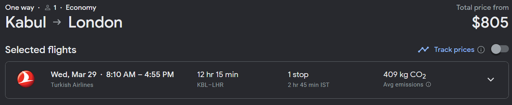
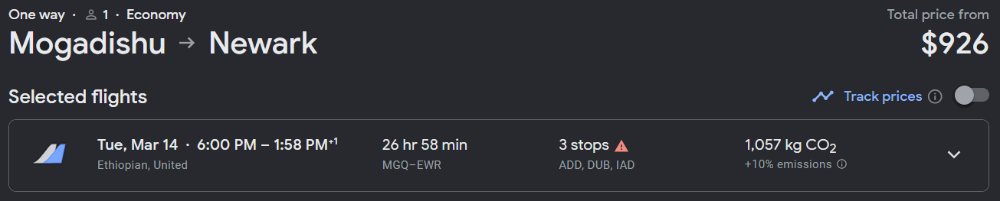

We invented Exit West-style portals.
Then we prohibited those most in need from using them.
By Frank Chun Yeung Wong
22 January, 2023
AP English Midterm Project
In Exit West, Saeed and Nadia get a chance at a better life and a chance to escape the warzone their city turned into through magical portals.
These magical portals randomly pop up in hidden places, and transport anyone who goes through them between two locations on Earth instantaneously.
The fact that these portals are everywhere but also relatively hidden is what puts them out of reach of the authorities, provides an accessible pathway between impoverished and wealthy countries, or in Sayeed and Nadia's case, from their war-torn city to a beach resort in Greece.
These portals don't exist in the real world, but nowadays, we have the next best thing: Air travel.
|
One can travel from Kabul, Afghanistan to London; Mogadishu, Somalia to New York; Caracas, Venezuela to Paris; or Tripoli, Libya to Toronto in comfort and safely with just one easily-bookable plane ticket for anywhere from $400 to $1000.
Compared to paying a smuggler roughly $1500 to cross deserts and mountains from Afghanistan to Istanbul, or up to $7000 to $10000 to bring you through harsh terrain, crossing the jungle that is the Darién Gap, from Venezuela to the US, all while constantly under the threat of being arrested and deported by authorities, robbed or murdered by criminals, or dying from a multitude of potential causes, these plane tickets sound like a much better deal.
This might make you wonder: Why don't migrants just fly?
The answer to that question is simple:
They can't. We don't let them.
|

|
|

|
|
|
|
|
What do I mean when I say we don't let them:
Sources & Inspirational Material:
Cohn, D'Vera. How U.S. immigration laws and rules have changed through history. Pew Research Center, 30 September 2015, https://www.pewresearch.org/fact-tank/2015/09/30/how-u-s-immigration-laws-and-rules-have-changed-through-history/. Accessed 22 Jan 2023.
Google Flights. Google, https://flights.google.com. Accessed 22 Jan 2023.
Hamid, Mohsin. Exit West. New York, Riverhead Books, 2017.
Human Development Report 2021/2022. United Nations Development Programme, https://hdr.undp.org/system/files/documents/global-report-document/hdr2021-22pdf_1.pdf. Accessed 22 Jan 2023.
Human Smuggling Fees. Open Borders: The Case, https://openborders.info/human-smuggling-fees/. Accessed 22 Jan 2023.
Nelson, Maggie. The Argonauts. Minneapolis, Graywolf Press, 2015.
Robles, Pablo, Darren Long and Dennis Wong. 100 Days of Protests Rock Hong Kong. South China Morning Post, 17 September 2019, https://www.nytimes.com/interactive/2019/10/23/nyregion/basements-queens-immigrants.html. Accessed 22 Jan 2023.
Rothschild, Connor. Map of Missing Migrants. Github Pages, https://connorrothschild.github.io/map-missing-migrants/. Accessed 22 Jan 2023.
Smuggling People from Afghanistan to Turkey. DW, 25 October 2021, https://www.dw.com/en/smuggling-people-from-afghanistan-to-turkey/a-58981207. Accessed 22 Jan 2023.
Stewart, Nikita, Ryan Christopher Jones, Sergio Peçanha, Jeffrey Furticella and Josh Williams. Underground Lives: The Sunless World of Immigrants in Queens. New York Times, 23 October 2019, https://multimedia.scmp.com/infographics/news/hong-kong/article/3027462/hong-kong-100-days-of-protests/index.html. Accessed 22 Jan 2023.
The Henley Passport Index. Henley & Partners, https://www.henleyglobal.com/passport-index/ranking. Accessed 22 Jan 2023.